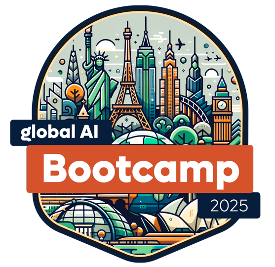

Upcoming Events 📅
Don't Miss any of your important events. Stay Updated !
Photography events in 2025 spotlight innovation, storytelling, and visual technology worldwide. Major exhibitions like Photokina in Cologne and Paris Photo display cutting-edge camera tech and fine art photography. The Sony World Photography Awards Exhibition tours global cities, showcasing exceptional talent across genres. India Photo Festival (Hyderabad) and FORMAT Festival (UK) highlight emerging voices and cultural themes. Many events include interactive galleries, workshops, and talks by renowned photographers. AI-driven editing tools and immersive photo installations are trending. These gatherings offer inspiration, networking, and visibility for professionals, hobbyists, and visual creatives shaping the future of image-making.

Photo Gallery Event
Free Entry | Free Food | Pets are Not Allowed
AI technology is rapidly transforming industries by enabling machines to learn, reason, and make decisions. It powers innovations in automation, healthcare, finance, and more, improving efficiency and accuracy. With advancements in machine learning, natural language processing, and robotics, AI continues to reshape how we interact with technology and solve complex problems.

Free Entry | Free Food | Pets are Not Allowed
The Global AI Bootcamp is an annual event that occurs worldwide, where developers and AI enthusiasts can learn about AI through workshops, sessions, and discussions. Local chapters of the Global AI Community host the events in various locations across the globe. This year, the bootcamp will take place in March and April 2025.
Contact
+91 7200163330 | eventcollabc@gmail.com
2th street Avenue Park, Chennai, 600077